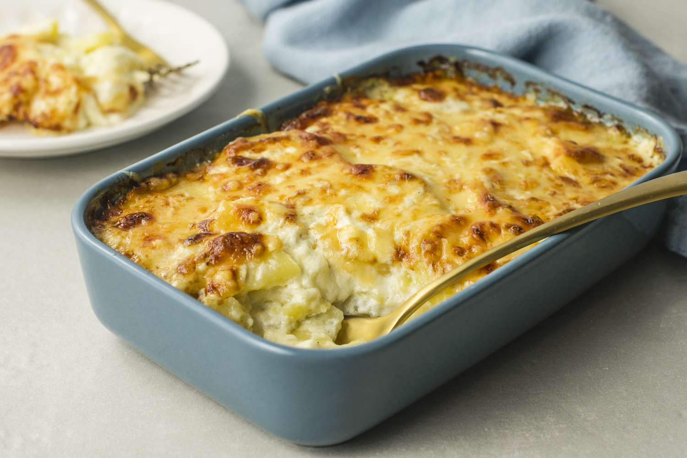

Gratin Dauphinois

Description
A Gratin Dauphinois is a creamy French dish made of thinly sliced potatoes baked with garlic, cream, and cheese.
This rich and savory casserole features tender potatoes layered in a decadent mixture of cream and garlic, topped with a golden, bubbly cheese crust.
Ingredients
- 2 pounds potatoes (thinly sliced)
- 2 cups heavy cream
- 2 cloves garlic (minced)
- 1 cup grated Gruyère cheese
- Salt and pepper (to taste)
- Butter (for greasing the baking dish)
Steps
- Preheat oven to 350°F (175°C) and butter a baking dish.
- Layer half of the sliced potatoes in the dish.
- In a saucepan, heat cream and garlic until warm; season with salt and pepper.
- Pour half the cream mixture over the potatoes and sprinkle with half the cheese.
- Repeat with remaining potatoes, cream mixture, and cheese.
- Bake for 60-70 minutes, until potatoes are tender and the top is golden brown.